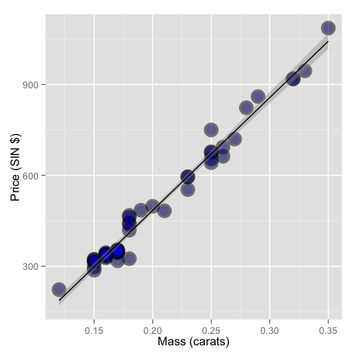

- Mínimos cuadrados es una herramienta de estimación.
- Para realizar inferencia se desarrolla un modelo probabilístico de regresión lineal \[ Y_i = \beta_0 + \beta_1 X_i + \varepsilon_{i} \]
- Aquí \(\varepsilon_{i}\) se asume iid \(N(0, \sigma^2)\).
- Note que \(E[Y_i ~|~ X_i = x_i] = \mu_i = \beta_0 + \beta_1 x_i\)
- Note que \(Var(Y_i ~|~ X_i = x_i) = \sigma^2\).
- La estimación por ML de \(\beta_0\) y \(\beta_1\) coincide con la estimación por OLS \[\hat \beta_1 = Cor(Y, X) \frac{Sd(Y)}{Sd(X)} ~~~ \hat \beta_0 = \bar Y - \hat \beta_1 \bar X\]
- \(E[Y ~|~ X = x] = \beta_0 + \beta_1 x\)
- \(Var(Y ~|~ X = x) = \sigma^2\)
Desarrollo Laboratorio Nº3
Análisis de Datos
Profesores: Ramón H. Cornejo-Muñoz y Felipe Rojas
Profesor Ayudante de Laboratorio: Mauricio Vargas
Ayudantes: Franco Mansilla y Mauricio Díaz
Universidad Nacional Andrés Bello
Modelo de Regresión Básico
Interpretación de los coeficientes (1)
Intercepto
- \(\beta_0\) es el valor esperado del output cuando el input es 0 \[ E[Y | X = 0] = \beta_0 + \beta_1 \times 0 = \beta_0 \]
- Note que esto no siempre es de interés, por ejemplo cuando \(X=0\) es imposible o está fuera del rango de los datos (e.g. Si \(X\) corresponde a presión sanguínea, estatura, etc.)
- Considere que \[ Y_i = \beta_0 + \beta_1 X_i + \varepsilon_i = \beta_0 + a \beta_1 + \beta_1 (X_i - a) + \varepsilon_i = \tilde \beta_0 + \beta_1 (X_i - a) + \varepsilon_i \] Entonces, si desplazamos \(X\) en \(a\) unidades cambia el intercepto pero no la pendiente. menudo \(a\) se fija en \(\bar X\) tal que el intercepto se interpreta como la respuesta esperada en el valor promedio de \(X\).
Interpretación de los coeficientes (2)
Pendiente
- \(\beta_1\) es el cambio esperado en el output cuando el input cambia en una unidad \[ E[Y ~|~ X = x+1] - E[Y ~|~ X = x] = \beta_0 + \beta_1 (x + 1) - (\beta_0 + \beta_1 x ) = \beta_1 \]
- Considere el impacto de cambiar las unidades (medición) de \(X\) \[ Y_i = \beta_0 + \beta_1 X_i + \varepsilon_i = \beta_0 + \frac{\beta_1}{a} (X_i a) + \varepsilon_i = \beta_0 + \tilde \beta_1 (X_i a) + \varepsilon_i \]
- Entonces, la multiplicación de \(X\) por un factor \(a\) resulta en que se divide el coeficiente por el mismo factor \(a\).
- Si queremos predecir el output dado un valor del input, digamos \(X\), el modelo de regresión predice \[ \hat \beta_0 + \hat \beta_1 X \]
Interpretación de los coeficientes (3)
Ejemplo
- Si \(X\) es la estatura en \(m\) e \(Y\) es el peso en \(kg\). Entonces \(\beta_1\) es \(kg/m\). Convirtiendo \(X\) en \(cm\) implica multiplicar \(X\) por \(100 cm/m\). Para obtener \(\beta_1\) en las unidades correctas, tenemos que dividir por \(100 cm /m\) y así se tendrán las unidades correctas. \[ X m \times \frac{100cm}{m} = (100 X) cm ~~\mbox{y}~~ \beta_1 \frac{kg}{m} \times\frac{1 m}{100cm} = \left(\frac{\beta_1}{100}\right)\frac{kg}{cm} \]
Ejemplo: Base de datos diamond (1)
Datos
- Precio de los diamantes (en dólares de Singapur)
- Peso de los diamantes (en quilates)
- Quilate = medida estándar del peso de un diamante = 0,2g
- Para obtener los datos hay que usar
library(UsingR); data(diamond)
Ejemplo: Base de datos diamond (2)
Gráfico

Ejemplo: Base de datos diamond (3)
Ajuste del modelo de regresión
fit <- lm(price ~ carat, data = diamond)
coef(fit)
(Intercept) carat
-259.6259 3721.0249
- Se estima un aumento esperado de 3721.02 dólares de Singapur en el precio por un aumento de un quilate en el precio del diamante.
- El intercepto -259.63 corresponde al precio esperado de un diamante de 0 quilates.
Si se quiere información más detallada se usa summary(fit)
Ejemplo: Base de datos diamond (4)
Obtención de un intercepto interpretable
Se puede escribir el modelo usando la desviación con respecto a la media (\(X-\bar{X}\)) como input.
fit2 <- lm(price ~ I(carat - mean(carat)), data = diamond)
coef(fit2)
(Intercept) I(carat - mean(carat))
500.0833 3721.0249
Entonces $500.1 es el precio esperado para un diamante de peso promedio que en el caso de los datos corresponde a 0.2041667 quilates.
Ejemplo: Base de datos diamond (5)
Cambio de escala
- Un incremento de 1 quilate es muy grande, ¿qué se esperaría si el peso aumenta 1/10 quilates?
- Se puede dividir el coeficiente por 10.
- Se espera un aumento de 372.102 dólares de Singapur en el precio por cada 1/10 quilates que aumenta el precio.
- Esto es lo mismo que cambiar la escala de \(X\) y ajustar la regresión
fit3 <- lm(price ~ I(carat * 10), data = diamond)
coef(fit3)
(Intercept) I(carat * 10)
-259.6259 372.1025
Ejemplo: Base de datos diamond (5)
Predicción del precio de un diamante
Supongamos que tenemos tres diamantes cuyos pesos son 0.16, 0,27 y 0,34 quilates. La estimación de su precio se obtiene de la siguiente forma:
newx <- c(0.16, 0.27, 0.34)
predict(fit, newdata = data.frame(carat = newx))
1 2 3
335.7381 745.0508 1005.5225
Ejemplo: Base de datos diamond (6)
Gráfico para interpretar la regresión

Regresión usando ANOVA (1)
Preguntas:
- ¿Es más económico un automóvil automático o uno mecánico?
- ¿Qué variables pueden explicar el rendimiento de un automóvil?
Usaremos la base de datos mtcars que viene en la librería datasets. La base contiene información sobre el rendimiento (millas por galón) y características (peso, transmisión, cilindros, etc ) de varios modelos de automóviles.
Para ver las variables de la base de datos:
library(datasets)
data(mtcars)
str(mtcars)
head(mtcars, n=5)
Regresión usando ANOVA (2)
ANOVA explica las fuentes de variabilidad. Para evaluar la interacción de mpg con las demás variables usamos analysis <- aov(mpg ~ ., data = mtcars); summary(analysis)
Df Sum Sq Mean Sq F value Pr(>F)
cyl 1 817.7 817.7 116.425 5.03e-10 ***
disp 1 37.6 37.6 5.353 0.03091 *
hp 1 9.4 9.4 1.334 0.26103
drat 1 16.5 16.5 2.345 0.14064
wt 1 77.5 77.5 11.031 0.00324 **
qsec 1 3.9 3.9 0.562 0.46166
vs 1 0.1 0.1 0.018 0.89317
am 1 14.5 14.5 2.061 0.16586
gear 1 1.0 1.0 0.138 0.71365
carb 1 0.4 0.4 0.058 0.81218
Residuals 21 147.5 7.0
---
Signif. codes: 0 '***' 0.001 '**' 0.01 '*' 0.05 '.' 0.1 ' ' 1
Regresión usando ANOVA (3)
Modelo 1
Estimaremos el siguiente modelo considerando los datos de la tabla ANOVA: \[ MPG_i = \beta_0 + \beta_1 CYL_i + \beta_2 DISP_i + \beta_3 WT_i + \beta_4 AM_i + \varepsilon_i \]
fit1 <- lm(mpg ~ cyl + disp + wt + am, data = mtcars)
coefficients(fit1)
(Intercept) cyl disp wt am
40.898313414 -1.784173258 0.007403833 -3.583425472 0.129065571
Regresión usando ANOVA (4)
Modelo 1
Usando summary(fit1)
Coefficients:
Estimate Std. Error t value Pr(>|t|)
(Intercept) 40.898313 3.601540 11.356 8.68e-12 ***
cyl -1.784173 0.618192 -2.886 0.00758 **
disp 0.007404 0.012081 0.613 0.54509
wt -3.583425 1.186504 -3.020 0.00547 **
am 0.129066 1.321512 0.098 0.92292
---
Signif. codes: 0 ‘***’ 0.001 ‘**’ 0.01 ‘*’ 0.05 ‘.’ 0.1 ‘ ’ 1
\(\Rightarrow\) no se debe incluir la variable disp.
Regresión usando ANOVA (5)
Modelo 2
Estimaremos el siguiente modelo considerando la significancia de las variables: \[ MPG_i = \beta_0 + \beta_1 CYL_i + \beta_2 WT_i + \beta_3 AM_i + \varepsilon_i \]
fit2 <- lm(mpg ~ cyl + wt + am, data = mtcars)
coefficients(fit2)
(Intercept) cyl wt am
39.4179334 -1.5102457 -3.1251422 0.1764932
Ejercicio
Escriba un informe de no más de 2 páginas junto a su grupo de trabajo (los mismos del proyecto de curso) en el que se responda claramente:
- ¿Cuáles son las variables más importantes para explicar la variable MPG en distintos modelos de automóviles?
- ¿Cuál de los dos modelos de la parte anterior es mejor y por qué?
- ¿Se puede decir que la variable AM (tipo de transmisión) explica la variable MPG en distintos modelos de automóviles?
- Comente los alcances y limitaciones del modelo en base a los datos disponibles y los supuestos de OLS
Indicaciones:
- Use argumentos estadísticos y argumentos teóricos en base a prensa especializada
- Presente sus resultados en un lenguaje simple y formal
Desarrollo Ejercicio (Parcial)
Para comparar los modelos vamos a testear si el modelo extendido tiene mayor poder predictivo que el modelo reducido. Se tiene \(H_0: \beta_{\text{disp}} = 0\) y el estadístico es \[F = \frac{(\text{SSE}_{\text{reduced}} - \text{SSE}_{\text{extended}})/(p-k)}{\text{SSE}_{\text{extended}}/(n-p-1)}\]
anova(fit2, fit1, test = "F")
Analysis of Variance Table
Model 1: mpg ~ cyl + wt + am
Model 2: mpg ~ cyl + disp + wt + am
Res.Df RSS Df Sum of Sq F Pr(>F)
1 28 191.05
2 27 188.43 1 2.6212 0.3756 0.5451
\(\Rightarrow\) no hay evidencia para decir que es preferible el modelo extendido.